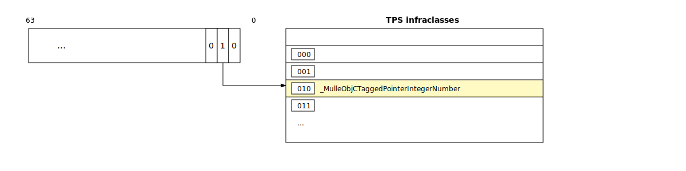

Class
Syntax topics
@interface SomeClass
@end
@implementation SomeClass
@end
NSString *helloWorld = @"VfL Bochum 1848";
NSString *key = @"name";
id obj;
Class cls;
SomeClass *instance;
Classes: @interface and @implementation
In mulle-objc, you define a class with @interface. This is very
similar to a struct definition in C:
@interface Empty
@end
and once you write
@implementation Empty
@end
the compiler will create the following data for the runtime:
{kind=link}
The blue structure on top is the infraclass and the yellow structure below is the metaclass. The infraclass is the part you will be interacting with most of the time. infraclass and metaclass together form what is known as a classpair.The term “class” is used interchangeably for infraclass, metaclass, and classpair. The differentiation rarely matters.
And this is (some) of the information you can get about a class:
| Field | Description |
|---|---|
allocationsize |
amount of memory to allocate for instance excluding header |
inheritance |
where the class inherits methods from |
state |
internal state of the class |
ivarhash |
a hash over the ivars of the class to prevent fragility problems |
allocatedInstances |
number of instances “in flight” (not yet deallocated) |
preloads |
number of methods to preload into the cache |
Objects
In C you use malloc to
reserve a memory block for a struct variable on the heap. In Objective-C you create an
instance of a class. Both class and instance fall under the moniker
object.
Objects are uniformly accessed via a pointer, which is either of type id
for instances, or of type Class for classes. Every Objective-C class is its
own type, which you can use instead of id .e.g. Empty *emptyInstance.
Every Objective-C object belongs to a class. For that it needs to be able
to reference it somehow. That somehow is usually the isa pointer.
Heap instances
The most common type of an Objective-C object is an instance that resides on the heap i.e. was malloced. The general memory layout of a heap instance (at address 0x10000 in this case) is:
. .
header: +---------------+
: :
: :
+---------------+ 0xFFFF8
| isa |
ivars: +---------------+ 0x10000 <---- pointer to heap instance
| ivar 0 |
| ivar 1 |
: ... :
+---------------+
. .
The isa pointer will point to the infraclass of the instance.
nil instance
The nil instance is just the NULL pointer. Is it really an object ? Nobody knows. It has a cousin the Nil class, which is also just the NULL pointer.
TPS instances
TPS stands for Tagged PointerS. mulle-objc has some special instance pointers that encode the class in the lower bits of the pointer. These bits are then used to index a table to retrieve the proper infraclass

For example very small strings and most integers are small enough to fit into a TPS pointer. This saves allocation time and space.
static NSString instances
There is a special kind of instance that exists in the data segment and not
on the heap. It is the static string, created with @"...". Its memory layout
is just like a heap instance. These static instances are created by the
compiler only.
Class objects
Classes are also objects, they always reside on the heap (sic!) in mulle-objc.
Classes also have an isa pointers. This is one of the reasons for the
classpair. Since the infraclass is an object it needs a valid value for isa,
and that is the metaclass. The metaclass has also an isa pointer, and this
references back to the infraclass. (See: Special case: the root class
for more on this topic).
API
| Function Name | Description |
|---|---|
MulleObjCObjectGetClass |
Get the Class of an object |
MulleObjCInstanceGetClass |
Get the Class of an instance (same as ObjectGetClass) |
MulleObjCObjectIsInstance |
Check if object is an instance (not a class) |
MulleObjCObjectIsInstanceOrNil |
Check if object is an instance or nil |
MulleObjCObjectIsClass |
Check if object is a class (not an instance) |
MulleObjCObjectIsClassOrNil |
Check if object is a class or nil |
MulleObjCClassIsMetaClass |
Check if a Class is a metaclass |
MulleObjCInstanceGetClassNameUTF8String |
Get class name of an instance as C string |
MulleObjCObjectGetClassNameUTF8String |
Get class name of any object as C string |
MulleObjCClassIsSubclassOfClass |
Check class inheritance relationship (C function) |
NSObjectIsKindOfClass |
Check instance/class relationship (C function) |
MulleObjCInstanceIsMemberOfClass |
Check direct instance/class relationship (C function) |
| NSObject Method | Description |
|---|---|
-class |
Get receiver’s class |
+class |
Get class object |
-superclass |
Get receiver’s superclass |
+isSubclassOfClass: |
Check if class inherits from given class |
-isKindOfClass: |
Check if receiver is instance of class or inherits from it |
-isMemberOfClass: |
Check if receiver is direct instance of given class |